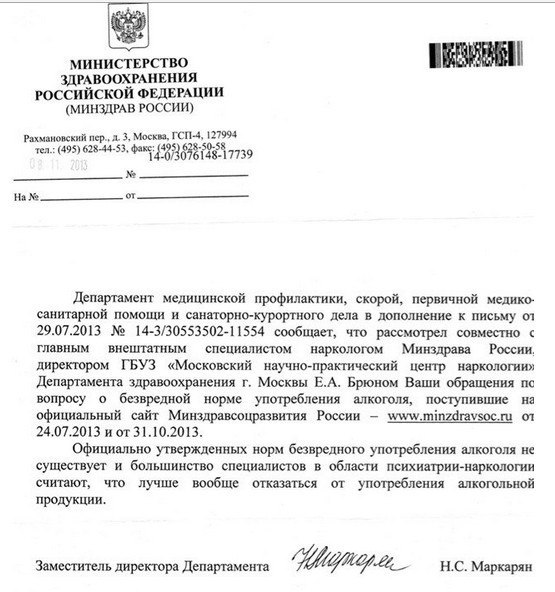

Вопрос о влиянии алкоголя на организм и эффективность тренировок, хотя и является однозначным, но тем не менее требует освещения в рамках нашей образовательной программы.
Спирт (этанол) – не содержит белков, углеводов, жиров, но имеет энергетическую ценность - 7 калорий/г. По своим свойствам он больше похож на углеводы, но в отличие от них не может превращаться в гликоген и откладываться в мышцах для дальнейшего использования.
Скажем сразу, что мы не будем углубляться в социальные аспекты, а также рассуждать на тему злоупотребления алкоголем. Вы без труда можете найти много информации о вреде алкоголя, но нас больше интересует его влияние на организм человека, который активно и регулярно тренируется.
Воздействие алкоголя на организм
Давайте пройдем по всем эффектам, которые оказывает алкоголь на протяжении всего процесса потребления:
1. Пищеварительный тракт. Алкоголь раздражает слизистую пищевода и желудка, хроническое потребление увеличивает риск развития рака пищевода и желудка, приводит к эзофагиту и гастриту соответственно. В желудке алкоголь может влиять на работу сфинктера, позволяющего попадать пище в тонкий кишечник, вплоть до полной его блокировки. Также алкоголь негативно влияет на поджелудочную железу, являясь одной из 3 самых распространенных причин панкреатита.
2. Печень. После всасывания в ЖКТ с током крови алкоголь попадает в печень, где продолжает свое разрушительное воздействие на организм. Хроническое потребление может привести к циррозу печени, вследствие чего она теряет свои функции по очистке крови от токсинов (в том числе собственных, вырабатываемых в процессе жизнедеятельности).
3. Мозг. Попадая в мозг, алкоголь нарушает процессы сна. С одной стороны, алкоголь вызывает сонливость, с другой стороны — ухудшает качество сна, что приводит к хроническому недовосстановлению, примерно такому же как при недостатке сна. Провалы в памяти, когда невозможно вспомнить, что происходило во время распития спиртных напитков, свидетельствуют о концентрации алкоголя в крови, которая серьезно нарушала мозговые функции. Такие ситуации хронического алкогольного опьянения могут привести к развитию синдрома Гайе-Вернике (неспособность организма усваивать витамин B1), что приводит к серьезным нарушениям функционирования коры головного мозга.
4. Сердечно-сосудистая система. Алкоголь снижает выработку форменных элементов крови (эритроциты, лейкоциты, тромбоциты), что в свою очередь ведет к развитию анемии, снижает иммунитет, ухудшает свертываемость крови, увеличивает риски внутренних кровотечений. Хроническое потребление алкоголя приводит к гипертрофии сердца, что ухудшает его кровоснабжение (и повышает риски инфаркта). Эпизоды периодического алкогольного опьянения (распространенный у нас вариант "на праздники") вызывает аритмии.
Алкоголь также замедляет анаболические процессы в организме из-за того, что желудочно-кишечный тракт впитывает намного меньше питательных веществ. В крови появляется дефицит аминокислот, так необходимых для мышц. Помимо недостатка белка, снижаются также и запасы гликогена, что плохо отражается на вашей выносливости, силе и скорости.
Причина такого эффекта в том, как наш организм перерабатывает алкоголь. Через кишечник алкоголь быстро проникает в кровь, а затем и в печень, где начинается первая стадия переработки. Фермент под названием дегидрогеназа преобразовывает спирт в ацетальдегид (уксусный альдегид), который является высокотоксичным веществом. Другие ферменты преобразуют ацетальдегид в уксусную кислоту и затем уже в углекислый газ, воду и энергию. Считается, что принимая алкоголь, вы заставляете организм отодвинуть на задний план окисление жиров. То же самое происходит при употреблении большого количества быстрых углеводов (пирожные, конфеты и т.д.). В результате замедленный метаболизм жиров в совокупности с большим потреблением пищи и доп. энергией от спирта приводит к лучшему отложению этих самых жиров.
Также под действием алкоголя организм теряет значительное количество жидкости. Обезвоженные мышцы теряют эластичность, затормаживается перенос полезных и вредных веществ. В таком состоянии активные физические нагрузки принесут только вред и потерю мышечной массы. Спортивные организации предостерегают от употребления алкоголя перед тренировкой или во время из-за его негативного влияния на метаболизм под нагрузкой, терморегуляцию, координацию и концентрацию внимания. Прямое влияние алкоголя на атлетические показатели наблюдается еще несколько часов после того, как признаки интоксикации (похмелье) уже отсутствуют.
Умеренное потребление
Нередко можно встретить информацию о том, что врачи рекомендуют употреблять алкоголь в малых дозах — мол это полезно. На самом деле, если вы обратитесь к оригиналам и первоисточникам, то их рекомендации звучат немного по-другому. Врачи говорят о том, что если вы уже употребляете алкоголь, то для вашего же здоровья лучше делать это в малых дозах. Но они ни в коем случае не призывают к тому, чтобы вы начинали пить для здоровья.

Под умеренным потреблением, согласно докладу ВОЗ, понимается дневное потребление в объеме не более 20 г спирта для мужчин и 10 г спирта для женщин в эквивалентном пересчете на концентрацию алкоголя в напитке. При увеличении дозы в полтора раза риск характерных заболеваний также возрастает в полтора раза и далее по экспоненте.
В то же время регулярное потребление алкоголя в малых дозах улучшает маркеры воспаления, липидный профиль крови, чувствительность тканей к инсулину. Регулярное умеренное потребление (8-16 г спирта в день) улучшает показатели холестерина высокой плотности, вариабельность сердечного ритма, функции эндотелия сосудов, свертываемость крови, что в результате снижает риски инфаркта и инсультов. Вроде бы все отлично, не так ли? Не тут то было. Хотя в долгосрочной перспективе небольшие дозы алкоголя и оказывают положительное влияние на сердечно-сосудистую систему по ряду показателей, однако непосредственно сразу после приема (до 24 часов) риски инсульта и инфаркта выше, чем для непьющих людей. Потребление алкоголя способствует появлению метастаз в печени, а также ухудшает протекание раковых заболеваний.
Ну и пара слов о сигаретах
Никотин - бесцветное маслянистое вещество, содержащееся в табаке и вызывающее у курильщика зависимость. Этот наркотик вызывает самое быстрое привыкание из всех известных человечеству веществ: чтобы пристраститься к нему, может потребоваться лишь одна сигарета.
Никотин - быстродействующий наркотик, уровень его содержания в крови падает примерно вдвое в течение 30 минут и примерно до одной четверти через час после выкуривания сигареты. Как только сигарета выкурена, организм начинает процесс быстрого выведения никотина из организма, это объясняет почему заядлые курильщики выкуривают до 20 сигарет в день.
Источники
1. The Effect of Ethanol on Fat Storage in Healthy Subjects - http://www.nejm.org/doi/full/10.1056/NEJM199204093261503#t=articleTop
2. WTO: Global status report on alcohol and health 2014 - http://apps.who.int/iris/bitstream/10665/112736/1/9789240692763_eng.pdf
3. Effect of alcohol consumption on biological markers associated with risk of coronary heart disease: systematic review and meta-analysis of interventional studies - http://www.bmj.com/content/342/bmj.d636
4. Alcohol consumption enhances liver metastasis in colorectal carcinoma patients. - https://www.ncbi.nlm.nih.gov/pubmed/9781941
5. Peter L. Myers, Richard E. Isralowitz Alcohol Health and Medical Issues Today
6.ACSM Statements "Nutrition and Athletic Performance"
7. Alcohol Challenge With Sons of Alcoholics: A Critical Review and Analysis
8. ALCOHOL, AGGRESSION AND SEROTONIN: METABOLIC ASPECTS
9. EVENING ALCOHOL SUPPRESSES SALIVARY MELATONIN IN YOUNG ADULTS
10. Effects of Alcohol on Carbohydrate Metabolism in Man